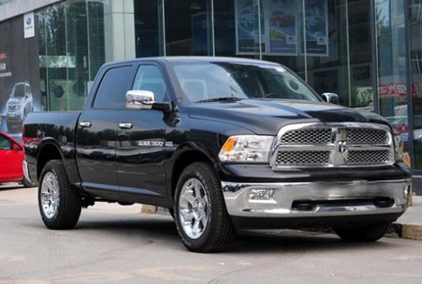
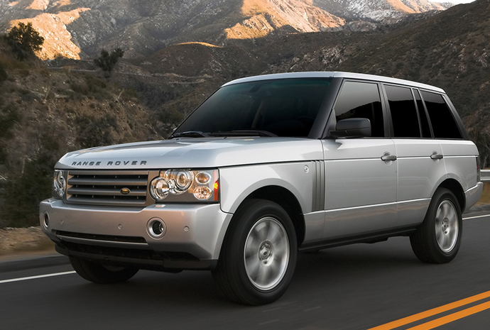

说起潘长江老师，在荧屏前的中国观众，那可是无人不知，无人不晓，作为春晚专业户的他，多年来扎根在央视及各大卫视的春晚舞台上，其作品更有太多经典，可谓脍炙人口。虽然1957年出生的他，已经超过60岁了，可如今依然活跃在荧屏前，其敬业精神不得不让人佩服。
在2015年的小品《车站奇遇》中，不免让人想起冯巩曾经在春晚小品《马路情歌》，这两段小品中都有一段是说无人驾驶汽车。然而现实中也确有其事，当然不是真的无人驾驶，而是潘长江老师的个子比较矮，但却喜欢开高大的车子。虽然潘长江身高不高，但是他的爱车，很多都是高高大大的，很多人都说他喜欢高大的车子，比如路虎，道奇公羊之类的。
开这样高大的车，以潘长江的身高而言，坐在里面确实难以被人发现，我想他应该也是眼睛刚刚好能看到车外吧。站着车外面都没车高，何况是坐在车内呢，很难不让人认为这不是无人驾驶。